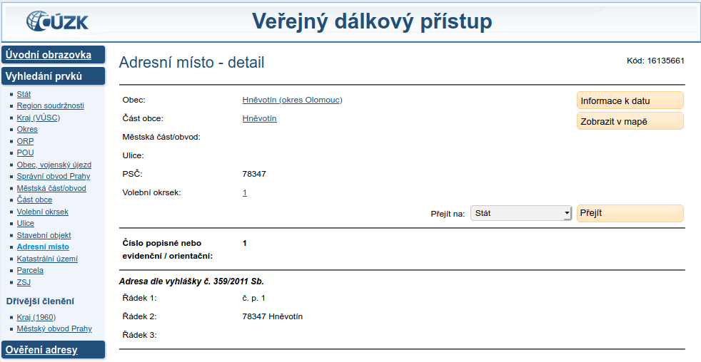
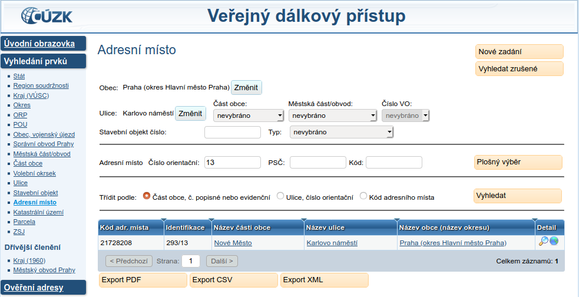

Tento dokument je sdílenou specifikací pro adresy pro použití v otevřeých formálních normách ve smyslu § 3 odst. 9 zákona č. 106/1999 Sb., o svobodném přístupu k informacím. Specifikace je ilustrována příklady dat ve formátech CSV [[rfc4180]], JSON [[ECMA-404]], XML [[xml]] a RDF [[rdf11-concepts]].
V této sekci jsou definovány jednotlivé položky, které lze použít k určení adresy v poskytovaných datech. Příkladem může být adresa místa konání akce či adresa sídla organizace. Adresa v této OFN je z definice adresou dle zákona č. 111/2009 Sb., o základních registrech.
Adresa slouží k určení místa v poskytovaných datech pomocí identifikátoru z RÚIAN ve formě IRI. Pouze pokud identifikátor ve formě IRI není k dispozici, lze použít určení místa pomocí strukturovaných položek částí adresy ideálně pomocí identifikátorů v podobě IRI, nebo textově. V nejhorším případě pouze volným textem v souladu s Přílohou č. 1 k vyhlášce 359/2011 Sb., o základním registru územní identifikace, adres a nemovitostí). V každém případě musí být adresní místo v ČR určeno jednoznačně (§ 29 písm. h) zákona č. 111/2009 Sb. o základních registrech).
Pro každou vlastnost je uveden její identifikátor ve formě IRI, který je pro její reprezentaci použit ve všech datových formátech, její název, datový typ, popis a příklad.
Tato otevřená formální norma také popisuje mapování jednotlivých položek adresy na ISA2 Core Location Vocabulary.
V České republice funguje základní registr obsahující identifikátory pro, mimo jiné, všechna adresní místa, již od roku 2012.
Je jím Registr územní identifikace, adres a nemovitostí (RÚIAN) spravovaný Českým úřadem zeměměřickým a katastrálním (ČÚZK).
Pro specifikaci konkrétního adresního místa v České republice se tedy použije IRI adresního místa z tohoto registru, např. https://linked.cuzk.cz/resource/ruian/adresni-misto/16135661, které adresní místo jednoznačně určuje.
Tato IRI jsou specifikována Metadatovým profilem ČR verze 4.0.
Adresou v této OFN označujeme určení místa v poskytovaných datech za použití identifikátorů z RÚIAN. Příkladem může být místo konání akce či sídlo organizace. Tato třída odpovídá třídě Address z ISA2 Core Location Vocabulary. Způsob identifikace adresy je pro účely této OFN rozdělen do 4 kategorií:
V této sekci je definováno vyjádření adresy identifikátorem adresního místa z RÚIAN. Pokud identifikátor adresního místa existuje, měl by být k vyjádření adresy použit pouze on. Kód adresního místa je možné dohledat v aplikaci Veřejný dálkový přístup (podle návodu v sekci Získání IRI adresního místa).
adresní_místo
Vlastnost adresní_místo je definována v sémantickém slovníku pojmů jako adresní místo následovně:
https://linked.cuzk.cz/resource/ruian/adresni-misto/16135661
V této sekci je definována reprezentace adresy pomocí identifikátorů nebo názvů územních prvků definovaných jako součást adresy dle zákona č. 111/2009 Sb., o základních registrech. Vyjádření adresy pomocí těchto prvků je možné, pokud pro danou adresu není identifikátor adresního místa ve formě IRI dostupný.
obec
Vlastnost obec je definována v sémantickém slovníku pojmů jako území obce nebo území vojenského újezdu následovně:
Adresa ➡ má přiřazené území obce ➡ území obce
Adresa ➡ má přiřazené území vojenského újezdu ➡ území vojenského újezdu
https://linked.cuzk.cz/resource/ruian/obec/502235
část_obce
Vlastnost část_obce je definována v sémantickém slovníku pojmů jako část obce následovně:
https://linked.cuzk.cz/resource/ruian/cast-obce/40151
katastrální_území
Vlastnost katastrální_území je definována v sémantickém slovníku pojmů jako katastrální území následovně:
https://linked.cuzk.cz/resource/ruian/katastralni-uzemi/622052
mop
Vlastnost mop je definována v sémantickém slovníku pojmů jako území městského obvodu v hlavním městě Praze následovně:
Adresa ➡ má přiřazené území městského obvodu v hlavním městě Praze ➡ území městského obvodu v hlavním městě Praze
https://linked.cuzk.cz/resource/ruian/mop/60
ulice
Vlastnost ulice je definována v sémantickém slovníku pojmů jako ulice nebo jiné veřejné prostraství následovně:
Adresa ➡ má přiřazenou ulici ➡ ulice nebo jiné veřejné prostranství
https://linked.cuzk.cz/resource/ruian/ulice/75523
název_obce
Vlastnost název_obce je definována v sémantickém slovníku pojmů jako má název obce nebo vojenského újezdu následovně:
Hradiště
Název_části_obce
Vlastnost název_části_obce je definována v sémantickém slovníku pojmů jako má název části obce následovně:
Bojanovice
název_katastrálního_území
Vlastnost název_katastrálního_území je definována v sémantickém slovníku pojmů jako má název katastrálního území následovně:
Bojanovice
název_mop
Vlastnost název_mop je definována v sémantickém slovníku pojmů jako má název městského obvodu v hlavním městě Praze následovně:
Praha 6
název_ulice
Vlastnost název_ulice je definována v sémantickém slovníku pojmů jako má název ulice následovně:
Járy Cimrmana
číslo_domovní
Vlastnost číslo_domovní je definována v sémantickém slovníku pojmů jako má číslo domovní následovně:
12
typ_čísla_domovního
č.p. - číslo popisné stavebního objektu č.ev. - číslo evidenční stavebního objektu.
V případě uvedení domovního čísla je vyplnění jeho typu nutností k jednoznačné identifikaci adresy.
Hodnota této vlastnosti odpovídá vlastnosti locatorDesignator z ISA2 Core Location Vocabulary.
Vlastnost typ_čísla_domovního je definována v sémantickém slovníku pojmů jako typ čísla domovního následovně:
č.ev.
číslo_orientační
Vlastnost číslo_orientační je definována v sémantickém slovníku pojmů jako číslo orientační následovně:
1
znak_čísla_orientačního
Vlastnost znak_čísla_orientačního je definována v sémantickém slovníku pojmů jako znak čísla orientačního následovně:
a
psč
Vlastnost psč je definována v sémantickém slovníku pojmů jako poštovní směrovací číslo následovně:
37001
Tato sekce obsahuje atributy vyjádření adresy, které nejsou součástí adresy podle zákona č. 111/2009 Sb., o základních registrech. Zde uvedené prvky slouží k upřesnění adresy, která nemá dostupný kód adresního místa.
vúsc
Vlastnost vúsc je definována v sémantickém slovníku pojmů jako území vyššího územního samosprávního celku následovně:
Adresa ➡ vyšší územní samosprávní celek ➡ území vyššího územního samosprávního celku
https://linked.cuzk.cz/resource/ruian/vúsc/35
okres
Vlastnost okres je definována v sémantickém slovníku pojmů jako území okresu následovně:
https://linked.cuzk.cz/resource/ruian/okres/3209
momc
Vlastnost momc je definována v sémantickém slovníku pojmů jako území městského obvodu a městské části územně členěného statutárního města následovně:
Adresa ➡ městský obvod/městská část ➡ území městského obvodu a městské části územně členěného statutárního města
https://linked.cuzk.cz/resource/ruian/momc/556904
prvek_rúian
Vlastnost prvek_rúian je definována v sémantickém slovníku pojmů jako prvek obsažený v rúian následovně:
https://linked.cuzk.cz/resource/ruian/parcela/17099648010
název_vúsc
Vlastnost název_vúsc je definována v sémantickém slovníku pojmů jako název vúsc následovně:
Jihočeský kraj
název_okresu
Vlastnost název_okresu je definována v sémantickém slovníku pojmů jako má název okresu následovně:
Praha-západ
název_momc
Vlastnost název_momc je definována v sémantickém slovníku pojmů jako název momc následovně:
Liberec-Vratislavice nad Nisou
Tato sekce popisuje zápis adresy volným textem podle Přílohy č. 1 k vyhlášce č. 359/2011 Sb. o základním registru územní identifikace, adres a nemovitostí. Tento zápis adresy slouží k reprezentaci adresního místa pro potřeby doručování a musí odpovídat adrese vyjádřené pomocí identfikátoru adresního místa, pokud je dotupný.
text
Vlastnost text je definována v sémantickém slovníku pojmů jako text adresy následovně:
Plzeňská 285, 33101 PlasySibeliova 368/51, Střešovice, 16200 Praha 6
V této sekci jsou uvedeny příklady reprezentace adresy v různých formátech a v různých úrovních detailu pro konkrétní příklady použití. Datová schémata, která jsou použita v příkladech, lze přímo použít a zahrnout do publikačních plánů, případně rozšířit dle vlastních potřeb. Pro formáty JSON [[!ECMA-404]] a XML [[!xml]] jsou k dispozici příslušná schémata, tedy Schéma pro formát JSON v jazyce JSON Schema [[json-schema]] a Schéma pro formát XML v jazyce XML Schema [[xmlschema11-1]]. Lze také použít zápis v CSV. Soubor v CSV [[!rfc4180]] je nutné doplnit schématem dle specifikace CSV on the Web [[tabular-data-primer]].
Pokud je adresa použita v rámci jiného datového standardu, tak se jména sloupců v CSV tabulce tvoří názvy atributů.
Zanořování je řešeno spojením názvu entity z jiného standardu, například adresa_sídla, a z názvu atributu adresy jejich spojením pomocí znaku podtržítka _, například adresa_sídla_psč.
Jedná se o nejčastější způsob určení adresy v České republice pomocí příslušného adresního místa v RÚIAN ve formě IRI. Tento zápis je vhodný pro výraznou většinu všech adresních míst v České republice. Identifikátor adresního místa je možné získat v aplikaci Veřejný dálkový přístup podle návodu v sekci Získání IRI adrsního místa.
K souboru CSV je třeba připojit metadata dle standardu CSV on the Web [[tabular-data-primer]].
Například pokud se CSV soubor jmenuje 0.csv, je s ním publikován i metadatový soubor 0.csv-metadata.json:
Pokud publikovaná data ještě nejsou propojena s registrem RÚIAN, než se tak stane, lze data publikovat po položkách, které ale duplikují autoritativní informace dostupné v RÚIAN a mohou být zdrojem chyb.
Do schématu si lze v případě potřeby přidávat další atributy.
V následujících příkladech je přidán atribut poznámka.
V XML se vlastní atributy přidávají na závěr adresy, do vlastního XML jmenného prostoru (XML namespace [[!xml-names]]).
V tomto příkladu jsou nové atributy přidány do XML jmenného prostoru x.
Alternativně je možné si nadefinovat celé nové XML schéma, které by vycházelo ze zde uvedeného základního XML schématu.
K souboru CSV je opět potřeba připojit metadatový popsiek dle standardu CSV on the Web [[!tabular-data-primer]]:
Pokud je cílem datové sady uvést údaje k doručování, je ideálním způsobem uvést IRI adresního místa. Po otevření IRI adresního místa ve webovém prohlížeči se zobrazí detaily adresního místa.
V detailech je položka "Adresa dle vyhlášky č. 359/2011 Sb., která odpovídá zápisu adresy pro doručování. V případě, že adresa nemá dostupný identifikátor adresního místa, lze použít položku text adresy. Text musí spolňovat požadavky Přílohy č. 1 k vyhlášce 359/2011 Sb., o základním registru územní identifikace, adres a nemovitostí.
A opět je k souboru CSV potřeba připojit metadatový popisek dle standardu CSV on the Web [[!tabular-data-primer]]:
V této sekci je návod, jak získat identifikátory ve formě IRI pro adresní místo i další územní prvky z RÚIAN pomocí aplikace Veřejný dálkový přístup (VDP). Na adrese http://vdp.cuzk.cz/ vyberte v nabídce položku "Vyhledání prvků". V levém sloupci vyberte "Adresní místo" (nebo jiný územní prvek, jehož identifkátor hledáte).
Vyhledejte adresní místo na základě kombinace obce, ulice, části obce, městské části/městského obvodu, volebního okrsku, stavebního objektu, orientačního čísla a/nebo PSČ.

Kód adresního místa je v prvním sloupci v tabulce výsledků. Validní zápis IRI adresního místa z příkladu je https://linked.cuzk.cz/resource/ruian/adresni-misto/21728208.
Ostatní územní prvky mají identifikátor zapsaný také v prvním sloupci tabulky výsledků.